01 Diode Circuits
Normal Diode
For DC analysis
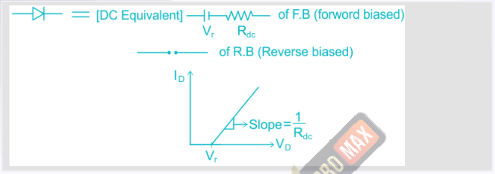
Where I D = Diode current V D = Diode voltage V r = Cut in voltage () 𝑉 𝐷 𝑛𝑉 𝑇 −1
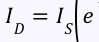
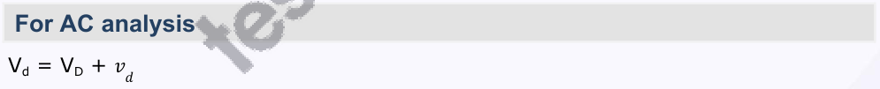
() 𝑉 𝑑 𝑒𝑉 𝑇 −1

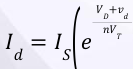
V D = DC Diode voltage v d = AC Diode voltage V d = Total Diode voltage () 𝑉 𝐷 𝑣 𝑑 𝑛𝑉 𝑇. 𝑒 𝑛𝑉 𝑇 𝐼 𝐷 + 𝑖𝑑≃𝐼 𝑆 𝑒 𝑣 𝑑 𝑛𝑉 𝑇 𝐼 𝐷 + 𝑖𝑑≃𝐼 𝐷 𝑒
𝐼 𝐷 𝑣 𝑑
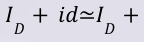
𝑛𝑉 𝑇 𝑣 𝑑
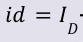
𝑛𝑉 𝑇 𝐼 𝐷 𝑖𝑑 1 where r ac = AC resistance 𝑣 𝑑 = 𝑟 𝑎𝑐 = 𝑛𝑉 𝑇
- 1) open all the diodes in the Ckt
- 2) find V D i.e. voltage across Diode
- 3) If V D > V r then diode is forward biased (ON). V D < V r then diode is RB (off) Where V r is cut-in voltage of diode
- 1) Replace all diodes in the Ckt by SC & assume current I D in p to n direction
- 2) If I D > 0 → Diode is ON I D < 0 → Diode is off

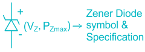
Zener Diode works in Reverse Bias Mode. In forward Bias, it act as Normal Diode Steps: first check V oc by replacing Zener Diode with open Ckt. If V oc ≥V z then replace zener by a source of V z If V oc < V z then replace zener by open circuit.

Where V oc = open Ckt voltage V z = Zener voltage V i = Input voltage R L = Load resistance R S = Source resistance
→ P z = Max. power dissipation, minimum power rating required, Maximum power rating
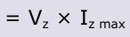
→ P z min = Minimum power dissipation
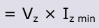
D.C = average value m = maximum value rms = root mean square value
Ideal case:
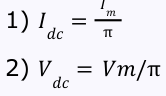
𝑉 𝑚
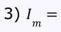
𝑅 𝐿 𝐼 𝑚
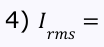
2 𝑉 𝑚
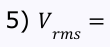
2 𝑉 𝑟𝑚𝑠
- 6) Form factor = 1.57 = 𝑉 𝐷𝐶 𝑉 𝑚
- 7) Crest factor = 2 = peak factor = 𝑉 𝑟𝑚𝑠
- 8) η = 40.6%, η = efficiency = 𝑂/𝑃 𝐷𝐶 𝑃𝑜𝑤𝑒𝑟 𝐼/𝑃 𝐴𝐶 𝑃𝑜𝑤𝑒𝑟
- 9) PIV = V m, where PIV = Peak Inverse Voltage
- 10) Transformer utilization factor = 0.28 (TUF)
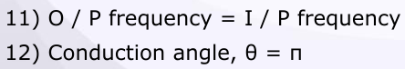
- 13) Ripple factor = 1.21
For practical case:
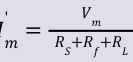
𝐼 𝑚 '
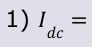
π, 𝐼 𝑚 R S = Coil resistance R f = Diode forward resistance R L = Load resistance
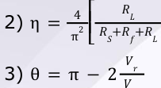
⎤⎥⎦
- 4) Ripple frequency f r = f i (input frequency)
Ideal case
2𝐼 𝑚
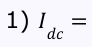
π 2𝑉 𝑚
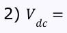
π
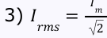
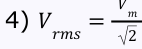
- 5) Ripple factor = 0.48
- 6) Form factor = 1.11
- 7) Crest factor = √2
- 8) η = 81.2%
- 9) PIV = 2 V m
- 10) TUF = 0.693
- 11) Conduction angle θ = 2π
Practical case
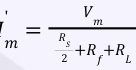
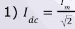
2, 𝐼 𝑚 𝑅 𝐿
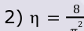
𝑅 𝑆
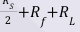
π 𝑉 𝑟
- 3) θ = 2π −4 𝑉 𝑚 → O / P frequency = 2 [I / P frequency]
𝑅 𝑆 For bridge rectifier, In all formulas of centre tap full wave rectifier, is replaced by 2 R S & R f is replaced by 2R f → PIV = V m → TUF = 0.812 2𝑉 𝑟 → θ = 2π −4 𝑉 𝑚
It adds DC or Avg value in the applied AC signal without changing the shape
of it. It is also known as peak detector and DC re-insertion.
●
| Clamper Ckt | |
|---|---|
| +ve Clamper Ckt (the DC value added i.e. V ) m | -ve Clamper Ckt (-ve DC value added i.e. –V ) m |

| |
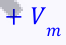
𝑣 𝑜 = 𝑉 𝑚 sin 𝑠𝑖𝑛 𝑤𝑡 𝑚𝑎𝑥
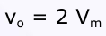
Diode clipper is known as Diode limiter, is a wave shaping circuit that takes an input waveform and clips off its top half, bottom half or both halves together.
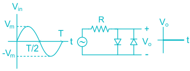